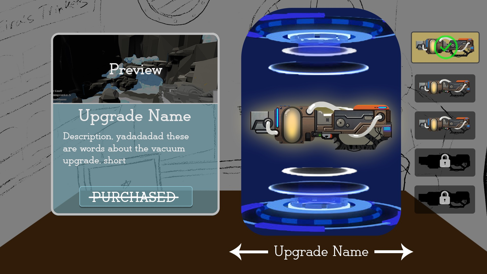
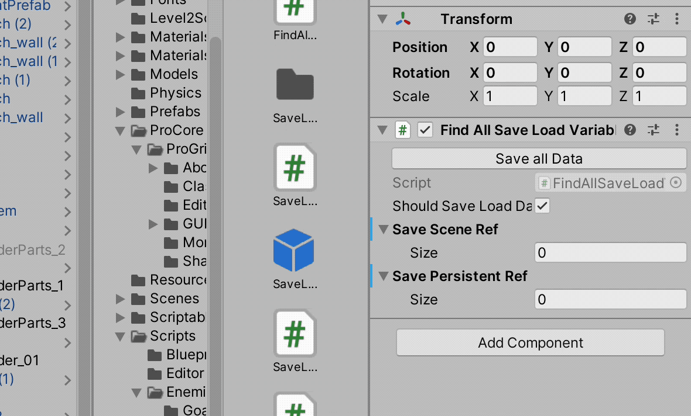
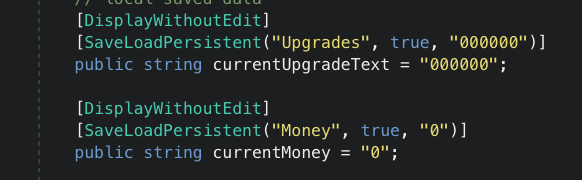

Senior Capstone Post 2 | Marching Cube Tools & New Game Name
Tyler Chapman, Feb, 3, 2020
Welcome Back! Again, since my last post, quite a lot has changed with our game. Most recently, our game was greenlit, meaning that we met particular requirements by a deadline so that we may continue development. To generalize, getting through cuts was to put forward an idea with a direction, and greenlight was to prove that direction.
New Title Screen Art
Getting through greenlight was a rather bumpy process. Our team was not well oriented to get everything done in the time given. Rather drastic measures were taken and a small group, mainly comprised of our original team worked through the Tuesday night before our presentation. Generally, crunch is bad, but our core team was by no means not prepared for an all-nighter as last semester in Montreal we had multiple all-nighters weekly. We made sure to not put any requirements on the work session to anyone, as to not pressure anyone into doing work they did not want to do. Our core group, however, knew that work had to be done to make it through greenlight, and had no issue losing sleep over it. We hope to not have to do this again, but if work is not done, or if it is not done to the quality we need, it will need to be redone. As we hope to publish, putting in minimal effort to tasks or straight up not doing them does not bode well for the final product.
We recently have addressed our team issues by reconstructing our work pipeline by giving particular tasks deadlines. We have also talked to members of our group to see what the issue was. Most of what we heard back had to do with other work, which we all have other work to do or that they were unsure how to complete a task but were trying. We made it clear to everyone that if they had other obligations to make that extremely apparent, but that they still need to complete their tasks by the deadline they are given. As for those who were unsure how to complete a task, we made it clear that asking questions is not only an option, it is encouraged. At least from a programming standpoint, a lot of issues that we run into, someone else has already run into previously and spent hours solving it. Instead of spending that extra time resolving it, ask the team’s other programmers for help.
With all that said, if we see continued lack of effort or inability to perform a given task, various enforcements which the leads have yet to disclose, will take effect. I generally find game development more of a hobby and a passion. With me, I find myself doing too many hours but at a point, it is not work and is more just for fun. I definitely understand not everyone feels this way, but promising that work will be done and not doing the work hurts the team. With that said, I would rather not have my entire blog post discuss faults in my team during the last week, but rather talk about cool features that I have added.
For greenlight, I picked up the task of creating our upgrade system, the upgrade UI, the level selection UI, serializing all the relevant save data and saving/loading this data. As one of the key features that we promised for greenlight was the upgrade system, I wanted to make sure it got in, but what got in was not going to have to be redone. A bad practice in programming is called coupling. When systems that do not need to explicitly know about one another are dependent on another, then that is coupled. It is not a great practice as it makes debugging harder, it creates connections were connections should not be and generally makes everything more confusing. When creating the system, I also kept in mind that the data that it generates would not only need to be changed in the current scene but saved in some way to be accessed in an upgrades scene.
Upgrade UI Mockup
I used the event system I implemented last semester and made a simple save system using player prefs to save individual data. As we had multiple upgrades, I needed to come up with a way to save data for an unknown amount of upgrades in a data type that could be serialized, so it could be saved. I decided to save the upgrades as a string. I devised a method that saved the upgrades in a possibility of three states. These states were not interacted with, blueprint found but not purchased and upgrade purchased. Seeing as these states were synonymous with boolean data, I saved all the upgrades in sets of two integers within a string. If there was no interaction, 00, if the blueprint was found but not purchased, 10 and if it was purchased, 11. Once the serialization of the data was working, I moved onto the upgrade UI that reads in this data.
For greenlight we only needed a working concept, so the UI frontend was minimally worked out, but was hooked up to the data’s backend. There was a slight issue though as our first upgrade has to do with optimizing your vacuum gun so you can collect wood. To access the first area in level one, you need wood to build a latter. With this oversight, for the greenlight, we gave the player the upgrade to start with to make sure the player could actually play the game. After the upgrades were done, I moved onto the level selection UI.
Our designers wanted the mechanic for our level selection to be inspired by Mario Odyssey. I made a basic prototype of the mechanic working, and made frontend UI that was scalable based on the mockup that the designers had given me. As a majority of the UI itself is all art, I was unable to do any more than a texture spinning sphere with default unity UI assets. Moving forward, the level select will get a facelift and look a lot better in the coming weeks.
Mario Odyssey Level Selection Reference

Once we were through greenlight, the first task I assigned myself was fixing the save/load system. For the quick and dirty implementation, I use Unity’s player prefs which make saving data extremely easy, but it is not a good idea to use in a production game, especially if we are trying to publish. I will not get largely into the reasons why, but the unexampled reason is that on Windows, player prefs stores data in the registry. For this task, I wanted to make a system that was even easier to use than player prefs for the designers but did not use Window’s registry. I first did a lot of preliminary research looking into best practices for saving data cross-platform. After I found a good amount of information, I started on my implementation. I started off by simply trying to serialize a bunch of different data types using JSON, saving them, then loading the changes back into a scene.
Once I got that working, I had a basic save load system that a generic templated class that could be called from anywhere as it was not a monobehaviour derived script. It was easy to use as it only needed a single call to load or save data, but I felt this was not good enough as anytime you wanted to load or save data, you needed to reopen the save file. I wanted to centralize all of the data so the file only needed to be opened once on start, and once when a new scene was loading to save. I then looked into attributes, which are bracketed statements that go above variables. In C#, Unity has a lot of default attributes such as one to hide data in the editor which makes it easy to have scripts data public, but not allow it to be modified fro the inspector. As this functionality was easy to use and simple to understand, I wanted to try to use it.
I created an attribute that tagged a variable if it was supposed to be saved and loaded. I then found all of the variables tagged with this attribute and printed out various data about them. Using C# reflection, I could manipulate the data in the variable that was found using the attribute to read the variable and write to it. Thinking more about what we were going to save, I decided to add another attribute. Some of our data was going to be saved for a specific level, and not used ever again unless the player went back to that particular level, such as statues uncovered. Quite a lot of data, such as money was going to be needed in every scene we have in the game. Knowing this, I decided to add another attribute to differentiate between scene save/load and persistent data save/load. Once I had my attributes in place, it was time to start creating save files from the variables tagged with the specific attributes.
Save Load Editor Tool
For testing purposes, I decided to make an editor tool and inspector to see how my data was being handled. With a click of a button, a script would find the variables tagged in the scene, create a save file specifying the level name, or if it was persistent data, serialize all of the save data along with other relevant save data such as who was saving the data and write to the file. I then showed my progress to the designers, and they thought that the debugging editor tool I created could be used by them. I agreed but was hesitant as editing the public variables in the inspector had the possibility of breaking the tool. I then created another attribute that would make public fields visible in the inspector but was unable to be edited. The tool was then usable by designers but was made in such a way that they could not break in unknowingly. Once I had the basic tool setup, I needed to actually save and load the data.
For loading, I needed to make sure what was being loaded knew where to load to. I first tried using Unity’s instance ids but they changed every time the editor was open. I then tried using the objects GUID, but the GUID was also not persistent throughout the editor. Instead of relying on Unity, I then just created my own identifier based on the game object's name, the script that the variable was in and the variable itself. Combining these three names created my unique identifier. I then saved this identifier with my save data. Once the file was read in, it first looks for the identifier. Once found, it can then match the identifier with an attribute it found while looking in the scene and send the loaded data over. With that done, it was time to save data.
One of the hardest parts of this implementation was saving data. The main reason for this is due to write access to files. A lot of operating systems allow for applications to read from files, but not write as this could potentially hurt the user. I eventually found a method that worked with saving. The only catch was this method did not work both on Mac and Windows, so I had to add each implementation depending on the OS the player was running.
Example of Save/Load Persistent Attributes
With actual saving working, I now had to find a good way to know how to get the data back to be saved. I first tried storing the information I found with the attributes when first loading the data, but I quickly learned that some reflection data of objects changes during runtime. I then looked into delegates, which are a declared function signature that can store references to function methods inside of it. Using reflection to grab a reference to a predefined function in each script that was saving/loading data, I was then able to use a callback function to get the data that was altered during the gameplay to be saved. I thought I was done, as everything seemed to work, but I was wrong.
I mentioned earlier that my save/load could serialize almost every data type, which is true, but sending this data to a function without knowing the type is dangerous, especially as I am saving some data in a string, but as an int and I need it to remain an int. An example of this is the upgrade system and how I was compacting its data. I now could not typecast data and had to only use strings. The issue here is that a lot of the data we wanted to have saved and loaded is numerical data. I reread a few C# documentation pages and found that reflection can attempt to call a function from a class simply by name. I then created a function that can send the loaded data to be modified before being applied. Now, if there is a variable that is an integer that needs to be typecast, it can be read in as a string, sent to this function, then assigned properly. After using my save load a bit, I realized that a few improvements could have been made.
I found that the attributes I made could lead designers to breaking my system. Specifically, if the designer does not assign starting data to a variable that needs to be used the moment it is loaded, such as the upgrade data. I then added a string parameter that is required when defining a save/load attribute as a default value for the variable. I also needed a global identifier for my persistent data. As multiple variables needed a single load, I created a string identifier that allows designers to name particular save data. The final addition to my attribute was to add a bool that specified if a variable needed to be saved. A lot of the current variables in the scene only need to load the data and do not manipulate it. I found it to be a waste to save a callback to a function that does nothing, so adding a false to the attribute assures that it will not attempt to be saved.
I spent a lot of time creating this save load system, not only for this current game but for any game I work on in the future. I probably could have simplified my system or cut corners, but I decided not to. By pushing through with this task, our game now has a designer-friendly system that can save and load data anywhere throughout any scene on any OS. I had a lot of fun figuring out the various problems that arose when creating it and hope that I can extend its functionality later.
To summarize my extremely long blog, I am glad we got through greenlight but hope that the whole team will put more effort into our project. I understand life gets in the way of work and that making games is not a passion for everyone, but doing the tasks that you said you would do is a fairly minimal ask of a teammate. After revamping our teamwork pipeline and talking with individual members, I feel confident that our team is in a good place. I hope I can make other cool and challenging systems such as the save/load one in the future. It took up nearly all of my weekend, but I would do it again just to see it work and be as simple to use. I can not wait until my next blog post to see how far our game has gotten since this one. Everything is slowly coming together and our game is starting to look/feel like a real game.